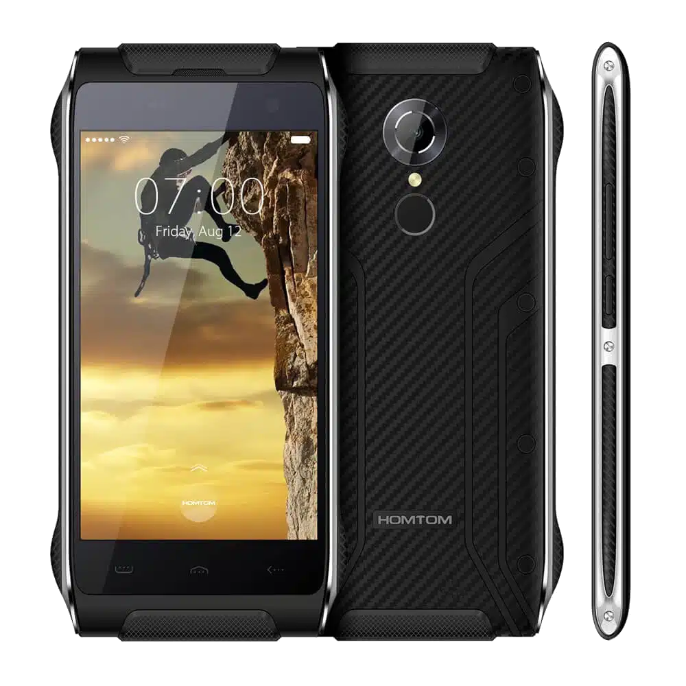

HomTom HT20 (homtom-ht20)
Jump to navigation
Jump to search
|
 HomTom HT20 | |
| Manufacturer | HomTom |
|---|---|
| Name | HT20 |
| Codename | homtom-ht20 |
| Released | 2016 |
| Category | testing |
| Original software | Android |
| Original version | 6.0 |
| Hardware | |
| Chipset | MediaTek MT6735M |
| CPU | 4x 1.25GHz ARM Cortex-A53 |
| GPU | Mali-T720 MP1 |
| Display | 720x1280 IPS |
| Storage | 16 GB |
| Memory | 2 GB |
| Architecture | aarch64 |
{kind=link}
This device is marked as not booting.
| USB Networking | |
|---|---|
| Flashing | |
| Touchscreen | |
| Display | |
| WiFi | |
| FDE | |
| Mainline | |
| Battery | |
| 3D Acceleration | |
| Audio | |
| Bluetooth | |
| Camera | |
| GPS | |
| Mobile data | |
| SMS | |
| Calls | |
| USB OTG | |
| NFC |
Unavailable
|
| Accelerometer | |
|---|---|
| Magnetometer |
Unavailable
|
| Ambient Light | |
| Proximity | |
| Hall Effect |
Unavailable
|
| Barometer |
Unavailable
|
| Power Sensor |
Unavailable
|
| Camera Flash | |
|---|---|
| Keyboard |
Unavailable
|
| Touchpad |
Unavailable
|
| USB-A |
Unavailable
|
| HDMI/DP |
Unavailable
|
| Ir TX |
Unavailable
|
| Ir RX | |
| Stylus | |
| Haptics | |
| Ethernet | |
| FOSS bootloader | |
Contributors
- Frost_I7 (I'll try to keep the wiki page up-to-date with the available info when I'm active.)
Users owning this device
- Frost I7 (Notes: Stock-ish)
How to enter recovery mode
Hold Power + Volume Up. When the HomTom logo appears, release Volume Up button.
Hardware
| W.I.P. |
| Feature | Hardware | Mainline | Links | Notes |
|---|---|---|---|---|
| GPU | Mali-T720 MP1 | Y | Mainline driver | |
| Panel | aeon_ili9881c_hd720_dsi_vdo_f509_xiaozhixing | Y | Mainline driver | |
| Touchscreen | gt1x | Y | Mainline driver | |
| Audio Codec | mtsndcard | ? | ||
| Wi-Fi | CONSYS_MT6735 | ? | ||
| Rear Camera | imx219mipiraw | Y | Mainline driver | |
| Front Camera | gc2365mipiraw | ? | ||
| Accelerometer | MC3XXX | Y | Mainline driver | |
| Ambient Light Proximity |
stk3x1x | Y | Mainline driver | |
| Charger | bq24158 | Y | Mainline driver | |
| Notification LED | ? | ? |